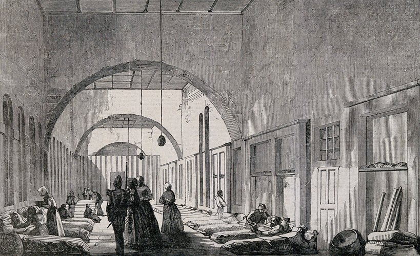

The Charge of the Light Brigade, 1854
Crimean War
The Crimean War (1854-56) was fought by an alliance of Britain, France, Turkey and Sardinia against Russia. It was the only major European conflict the Army engaged in between 1816 and 1914.
April 1854 - October 1854
The beginning
The Crimean War (1853-1856) transformed Istanbul, then the Ottoman capital, into a medical hub where new ideas were tested and exchanged among physicians and nurses from all over Europe to control the spread of infectious diseases and battle wounds. Patients were sent to the Ottoman capital for better treatment; specifically to a barrack style hospital founded as a unit of the Selimiye Barracks in Üsküdar. Known to the British as ‘Scutari’ with 3200-bed facility.
November 1854 - March 1855
The snow
A violent storm on 14 November that was characterized by strong winds and torrential rain wrought havoc in the camps, severely damaged developing infrastructure and caused the loss of transport ships laden with vital stores.
Several British ships were wrecked, including the steamship HMS ‘Prince’, which was carrying warm winter clothing and hay for the Commissariat’s horses. Altogether, 30 vessels with their precious cargoes of medical supplies, food and clothing were damaged. The troops in the trenches outside Sevastopol soon ran short of rations, winter clothes, tents, medical supplies and fuel for cooking. Poorly clothed, lacking shelter and succumbing to disease, by February 1855 the British force had been reduced to 12,000 effective men.
However, as time passed, the hospital soon became over-capacity and patients were being treated on mattresses laid on the floors of corridors.

In November 1854, Florence Nightingale arrived in Scutari on the Black Sea. She arrived with a group of 38 nurses from England ready to help the British soldiers who were fighting in Crimea.
The hospital in a dreadful state, soldiers lay on the ground in the clothes in which they arrived. Many were malnourished and dehydrated because of water and food shortages. The wounded were mixed in with the infected and open latrines helped to spread infection.
Since the beginning of the Crimean War, newspapers had been printing horror stories about British army hospitals. As a response to such news, the British Parliament formed a commission to work on the improvement of hospitals serving British soldiers in the Ottoman Empire.

April 1855 - September 1855
Improvement
In 1855 an official Sanitary Commission arrived in Crimea and, with Nightingale's cooperation, they ensured that toilets and washing facilities were upgraded, ventilation was improved and overcrowding reduced. The mortality rate at the military hospitals went from 41% when Nightingale arrived to 2% by the end of the war.
Soldiers of the 77th Regiment of Foot with new winter kit, 1855
October 1855 - March 1856
Closing to the end
On the fall of 1855, the Allies attacked again. For a second time, the British failed to take the Redan. But the French capture of the Malakoff redoubt, another key part of the defences, led to the Russians abandoning Sevastopol.
The Allies spent another winter in the Crimea. This time it was the French Army’s turn to be decimated by disease, while the British with well-clothed, housed and equipped, were spared the sufferings of the previous winter. The British began to help the French with supplies, as the French had helped them the first year.
Data Source: Chenu (1870) De la mortalité dans l'armée et des moyens d'économiser la vie humaine...
The Russians were shaken by the loss of Sevastopol. In October 1855, their mainland base of Kinburn also fell to the Allies. When the Austrians threatened to enter the war against them, the Russians agreed to peace terms and the Treaty of Paris was signed in March 1856.